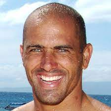
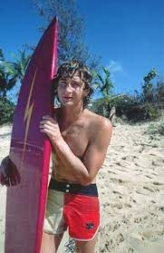
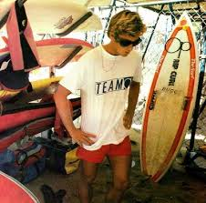

Kelly Slater é o recordista de títulos mundiais: KS11x. O surfista mais bem sucedido ($$$) e mais famoso de todos os tempos. Ganhou todos os títulos possíveis em todos os tipos de ondas. Um fenômeno! Dominou o surfe profissional por mais de uma década. Talvez o atleta mais vitorioso de todos os tempos, incluindo todos os esportes.
Mark Richards é 4x campeão mundial. Dominou o surfe profissional de 1979 até 1982. Campeão nas grandes ondas do Hawaii e também nas marolas dos “beach breaks”. Popularizou as “twin fins” (pranchas com duas quilhas).
Tom Curren é 3x campeão mundial. Ganhou no Hawaii, nos point breaks da Austrália e dos EUA. E também no “beach break” de Huntington. Rei do estilo. Cultuado como um Deus. Intocável e incontestável na década de 90. Influenciou mais de uma geração.
